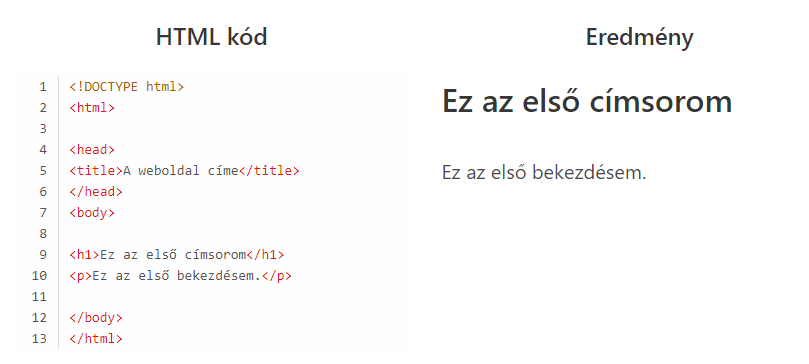

HTML bemutató
Ebben a cikkben megismerkedhetsz a HTML nyelv alapinformációival, például megtudhatod, hogy mi az a HTML és hogy mire használják.
Mi a HTML?
A HTML (angolul: HyperText Markup Language = hiperszöveges jelölőnyelv) egy leíró nyelv, melyet weboldalak készítéséhez fejlesztettek ki,
és mára már internetes szabvánnyá vált a W3C (World Wide Web Consortium) támogatásával. Az aktuális változata az 5-ös.
Egy HTML kód egyértelműen meghatározza a weboldal felépítését, kinézetét. Azaz a HTML nyelven megírt kódot a webböngésző értelmezi,
majd a kód alapján megjeleníti a már általunk megszokott oldalakat.
Hogy néz ki egy HTML kód?

A bal oldalon láthatjuk azt, hogy hogyan néz ki konkrétan egy HTML-kód, a jobb oldalon viszont azt láthatjuk,
hogy a bal oldalra beírt kód hogyan fog megjelenni a böngészőnkben.
A fentebb látható kód elemzése:
<!DOCTYPE html>: Ez a sor határozza meg, hogy ez egy HTML dokumentum lesz, ezzel üzenve a böngészők számára.
<html>: Ez a HTML fájlunk gyökéreleme, kötelező ennek következnie a !DOCTYPE html rész után.
<head>: Ezt magyarul fejnek, fejszekciónak vagy fejrésznek hívjuk. Alapvető információkat tartalmaz a HTML oldalunkról.
Például a következő szekciót.
<title>: Ez határozza meg a HTML oldal nevét. A böngésző innen olvassa ki a böngésző címsorában látható szöveget.
</title>: Ez az előző elem zárópárja. A nyitó és a záró tag közé kerül a HTML oldal címe.
<body>: Ez a dokumentum “test” része, ezután kell írni a weboldal tartalmát. Az e mögé írt tartalmak fognak megjelenni a böngészőben a weboldal
részeként. Ezt követni fog majd még egy </body> tag. De ezt nem rakhatjuk ki még most. A záró tag-et csak akkor rakhatjuk ki,
ha a weboldalunkat már feltöltöttük tartalommal.
<h1>: Ez egy címsor. A HTML nyelvben több címsor is létezik. (Például h1, h2, h3 stb.) A h1 a legnagyobb címsor, azaz a weboldalon ez lesz a
legnagyobb szöveg.
</h1>: Ez a címsor záró tag-e. A <h1> és </h1> közé került szöveget fogja nagy betűkkel kiírni a weboldalra.
<p>: Ez a bekezdést jelöli. Az ezután írt szöveget normál méretben fogja megjeleníteni a böngésző.
</p>: Ez az bekezdés zárópárja.
</body>: Az elején írtuk a <body> nyitó tag-et. Ez a zárópárja. Ez jelzi a böngésző számára, hogy eddig tartott a megjelenítendő rész.
</html>: Ez pedig azt jelzi a böngészőnek, hogy itt ér véget teljesen a HTML dokumentum.
<!DOCTYPE html>
<html lang="en">
<head>
<title>My first web page</title>
</head>
<body>
<p>Hello World!</p>
</body>
</html>